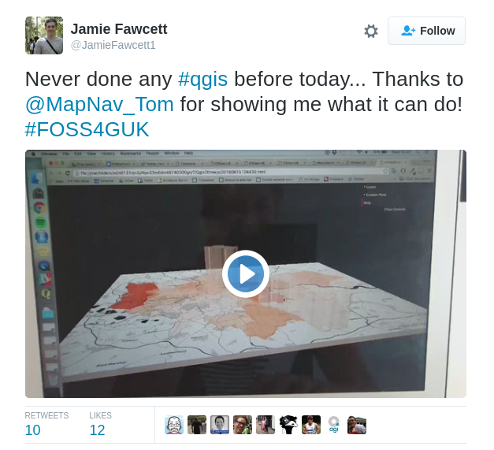
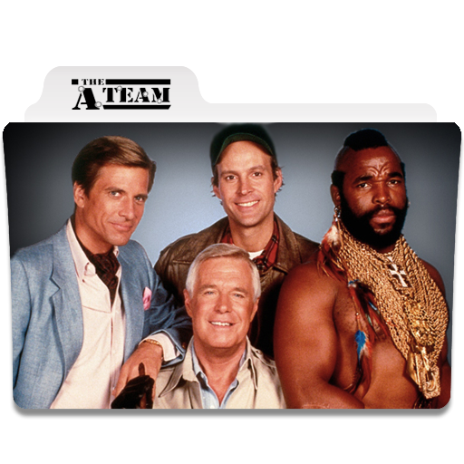

all the thankyous
Flickr: Ellen K CC BY-NC-SA 2.0
The Sponsors for making everything possible, in particular Ordnance Survey for the venue
The Organising team and volunteers
Astun Technology for allowing so many of the team to attend and help
The contributors to all the open source packages that we have heard about
and most of all to you for coming along
Flickr: Xelipe CC BY-NC-SA 2.0
There have been...
36 talks
13 workshops
5 streams
a party
and around 170 delegates (at a guess)
So hopefully you've learnt something new
Made some new friends or contacts
And will go home fired up with enthusiasm

On which note...
a call to action
Please don't leave here and take nothing from the event
Flickr: Alice Y CC BY-NC-SA 2.0
FOSS and in particular osgeo:UK are a community

and things only happen because people from that community make them happen
be that building plugins, fixing code, or running events like this
So if you have an idea for something- a plugin, some code that needs fixing, or an event
Flickr: Julian Santacruz CC BY 2.0
We can help you make that happen

So visit the website at uk.osgeo.org
Follow @osgeouk
and sign up at our mailing list (from the website)
and tell us what you want to do
or what you want help with
and we'll try to help
Go to FOSS4G 2016 in Bonn in August!
See 2016.foss4g.org
Public Service Announcement
Can you pick up your cups and return them to the tables outside when you leave?
kthxbai